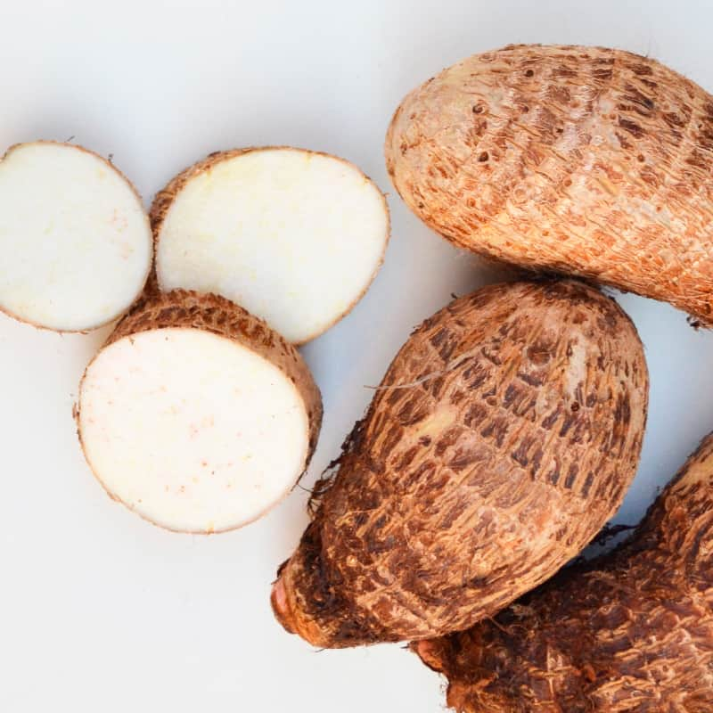

ABOUT YAMS
Yams are starchy tubers, a key food source in many tropical and subtropical regions. They are perennial vines with edible tubers, belonging to the Dioscorea genus. Yams are popular in Africa, the West Indies, and parts of Asia and the Americas. They are a source of calories, protein, and micronutrients.
Here's a short note about yams:

Key Features:
Edible Tubers:
Yams produce starchy, edible tubers that are a staple food in many cultures.
Diverse Species:
The genus Dioscorea includes many species, some of which are edible, while others are toxic.
Global Importance:
Yam cultivation is vital for food security in many tropical regions, especially in Africa and parts of Asia.
Cultural Significance:
Yams play an important role in the cultural fabric and social relations of many societies, particularly in Africa.